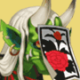
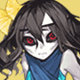
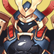

The table below shows the location of the Bounty Shikigamis in Onmyoji. Bounties refresh twice a day and are a good way to get Jades, Shards, and Coins. Using the table below, players can find the bounties quicker. It's a fork of this table, but providing information for both EN and JP onmyoji instead of EN and CN, updated bounty hint information, consistency reviewed, typos fixed, and made way lighter.
Note that Challenge Stages will offer at least 14 units of a Shikigami. However, because of the scarcity of Challenge Tickets, it is not recommend to use them unless the Bounty is hard to find.
Last update: Dec 26, 2018
| 式神 | ヒント | Location |
|---|---|---|
 Lantern Soul / |
Chapter 1 - First Green Imp has 2 in Normal, Second Lantern Boy has 2 in Hard Chapter 2 - Second Grave Digger has 2, First Parasite has 2 Chapter 3 - First Akashita has 2, Second Samurai X has 2 Chapter 5 - Boss Kamikui has 1 Chapter 6 - The two Lantern Soul have 1 each Chapter 7 - Second Kappa has 1 [Recommended] Chapter 9 - First Lantern Boy has 3, Second Lantern Boy has 1, Boss Mouba has 1 Chapter 13 - Boss Kubinashi has 1 Chapter 17 - Boss Arakawa Lord has 1 Riverside Tales - Stage Three has 2 [Recommended] Wraith of Arakawa - Stage One to Three have 3 each Umbrella's Guard - Stage Five and Seven have 1 each Summer Poem - Stage Five has 2 [Recommended] Shishio's Wake - Stage Two has 3 (unreleased) Aoandon's Tale - Stage One has 3 (unreleased) Umibozu's Secret - Stage One has 3 (unreleased) Vampira's Secret - Stage Two has 3 (unreleased) Youko's Secret - Stage One has 3 |
|
Akashita / 赤舌 |
Chapter 3 - First Akashita has 1, Second Akashita has 1 Chapter 10 - Second Satori has 1 Chapter 15 - All enemies have 1 except Boss Chapter 16 - First Akashita has 1, Second Akashita has 2, Third Akashita has 1 [Recommended] Chapter 23 - The two Hone Onna have 3 each Maple's Bond - Stage Six and Seven have 1 each Riverside Tales - Stage Three has 1 Cry Me a River - Stage Four to Six have 1 each Wraith of Arakawa - Stage One to Three have 1 each Tip of the Storm - Stage Five and Six have 1 each [Recommended] Summer Poem - Stage One has 3, Stage Six has 1 [Recommended] Shishio's Wake - Stage Four has 3 Aoandon's Tale - Stage One has 1, Stage Three has 3 (unreleased) Umibozu's Secret - Stage Three has 2 (unreleased) Vampira's Secret - Stage One has 1, Stage Four has 3 (unreleased) Youko's Secret - Stage Two has 1 |
|
Red Imp / 天邪鬼赤 |
Unconfirmed: プレースホルダー - Red ghost プレースホルダー - Slapping butt |
Chapter 4 - First Umbrella has 3, Second Umbrella has 1 in Normal, the two Red Imp have 1 each Chapter 5 - First Nurikabe has 2, Second Nurikabe has 3, the two Hahakigami have 1 each Chapter 6 - The two Chocho have 2 each Chapter 7 - Boss Youko has 2 Chapter 11 - The two Ichimokuren have 2 each [Recommended] Chapter 13 - The three Gaki have 3 each, the three Umbrella have 1 each [Recommended] Chapter 14 - The three Hahakigami have 3 each, Boss Yumekui has 3 Chapter 15 - The three Green Imp have 2 each Soul - Stage One has 2 Encounter - Kuro Mujou, Hone Onna, Shuzu, and Kyonshi Ani have 1 each, Umibozu has 2 Riverside Tales - Stage Six has 1 Summer Poem - Stage Two has 3 [Recommended] Shishio's Wake - Stage Three has 3, Stage Six has 1 (unreleased) Umibozu's Secret - Stage One has 1, Stage Five has 2 (unreleased) Vampira's Secret - Stage Three has 1 (unreleased) Youko's Secret - Stage One has 3, Stage Five has 1 |
|  Green Imp / 天邪鬼緑 |
Chapter 1 - The two Green Imp have 1 each, First Lantern Boy has 2 Chapter 2 - Boss Zashiki has 2 Chapter 5 - Last Kanko has 3 [Recommended] Chapter 6 - The two Blue Imp have 3 each, Boss Kodokushi has 3 Chapter 8 - The two Green Imp have 1 each Chapter 13 - The three Umbrella have 2 each Chapter 15 - The three Green Imp have 1 each Extra Chapter "Hell Agent in training" - Boss Kuro has 3 [Recommended] Encounter - Shuzu has 8, Gaki has 6, Hone Onna has 6, Kyonshi Ani has 4, and Umibozu has 1 Secret of the Evil Blade - Stage Six and Seven have 1 each Riverside Tales - Stage Six has 1 Shishio's Wake - Stage Three has 3 (unreleased) Umibozu's Secret - Stage Five has 1 (unreleased) Vampira's Secret - Stage Three has 3 (unreleased) Youko's Secret - Stage One has 1 |
|
 Yellow Imp / 天邪鬼黄 |
Unconfirmed: プレースホルダー - Drum プレースホルダー - Single eye |
Chapter 3 - The two Yellow Imp have 1 each, Second Akashita has 1 Chapter 5 - Second Hahakigami has 2, First Kanko has 2 Chapter 8 - The two Green Imp have 2 each Chapter 12 - First Oguna has 1 Soul - Stage One has 1 [Recommended] Encounter - Umibozu has 3, Shuzu has 2, and Kyonshi Ani has 1 Maple's Bond - Stage Four and Five have 1 each Riverside Tales - Stage Five/Six have 1 each Tip of the Storm - Stage Two has 1 Umbrella's Guard - Stage Five has 1 [Recommended] Shishio's Wake - Stage One has 3 (unreleased) Umibozu's Secret - Stage One has 2, Stage Five has 1 (unreleased) Vampira's Secret - Stage Three has 3 (unreleased) Youko's Secret - Stage Four has 2, Stage Five has 1 |
 Hahakigami / 箒神 |
Chapter 2 - The Hahakigami has 1 Chapter 3 - First Yellow Imp has 2 in Normal and has 1 in Hard Chapter 4 - The two Hahakigami have 1 each, Boss Ame Onna has 2 Chapter 5 - The two Hahakigami have 1 each [Recommended] Chapter 6 - The two Lantern Soul have 3 each Chapter 7 - First Koi has 1, Second Koi has 3 Chapter 8 - The two Momo have 1 each, First Umbrella has 3, Second Umbrella has 2, Boss Momo has 1 Chapter 9 - First Tesso has 3, Second Rat has 2 Chapter 12 - First Umibozu has 1 Chapter 14 - The three Hahakigami have 1 each [Recommended] Encounter - Futakuchi has 4, Kuro Mujou has 3, Hone Onna has 4, and Kyonshi Ani has 2 [Recommended] Tip of the Storm - Stage One has 4, Stage Two to Ten have 3 each Umbrella's Guard - Stage One to Three have 3 each Shishio's Wake - Stage One has 1 Aoandon's Tale Stage Two has 3 (unreleased) Umibozu's Secret - Stage One has 3 (unreleased) Vampira's Secret - Stage Two has 3 (unreleased) Youko's Secret - Stage Four has 3 |
|
 Blue Imp / 天邪鬼青 |
Unconfirmed: プレースホルダー - Blue skin プレースホルダー - Kite |
Chapter 2 - Boss Zashiki has 1 Chapter 5 - Boss Kamikui has 2 Chapter 6 - The two Blue Imp have 1 each Chapter 8 - The two Green Imp have 1 each, Boss Momo has 1 [Recommended] Chapter 10 - The two Ushi no Toki have 2 each Chapter 11 - Boss Momiji has 2 Extra Chapter "Hell Agent in training" - The two Momiji have 2 each Soul - Stage One has 1 Encounter - Futakuchi has 3, Kyonshi Ani has 3, and Umibozu has 1 [Recommended] Secret of Evil Blade - Stage One to Three have 4 each, Stage Four to Nine have 3 each, and Stage Ten has 2 Riverside Tales - Stage Six has 1 Umbrella's Guard - Stage Four to Six have 1 each Summer Poem - Stage Four and Five have 3 each Shishio's Wake - Stage Two has 3 Aoandon's Tale Stage Four has 2 (unreleased) Umibozu's Secret - Stage Five has 1 (unreleased) Vampira's Secret - Stage Three has 2 (unreleased) Youko's Secret - Stage Five has 3 |
Parasite / 寄生霊 |
Chapter 2 - The Hahakigami has 1, First Grave Digger has 2, the two Parasite have 1 each Chapter 3 - Boss Hououga has 3 Chapter 5 - The two Kanko have 1 each Chapter 7 - Boss Youko have 1 each Chapter 11 - The first Warrior Soul has 3 Chapter 12 - Boss Yuki Onna has 1 [Recommended] Chapter 16 - The three Akashita have 3 each [Recommended] Wraith of Arakawa - Stage One to Three have 3 each Shishio's Wake - Stage Two has 1 Aoandon's Tale Stage One has 1 (unreleased) Umibozu's Secret - Stage Two has 3 (unreleased) Vampira's Secret - Stage One has 3 (unreleased) Youko's Secret - Stage Two has 3 |
|
Umbrella / プレースホルダー |
[Recommended]
Chapter 4 - The second Hahakigami brings 2 in Normal (3 in Hard), the
two Umbrellas Ghost have 1 each, the first Red Imp has 1, the second Red
Imp has 2 Chapter 8 - The two Umbrella have 1 each Chapter 13 - The three Umbrella have 1 each Encounter - Gaki has 1 [Recommended] Cry Me a River - Stage One to Three have 1 each, Stage Four to Six have 3 each [Recommended] Umbrella's Guard - Stage Two has 3 Shishio's Wake - Stage One has 3 Aoandon's Tale Stage Two has 3 (unreleased) Umibozu's Secret - Stage Two has 1, Stage Four has 3 (unreleased) Youko's Secret - Stage Three has 3 |
|
Grave Digger / プレースホルダー |
Chapter 2 - Hahakigami has 1, the two Grave Digger have 1 each, the second Parasite has 2 Chapter 12 - the two Doujo have 1 each Chapter 23 - The two Grave Digger have 1 each, Boss Puppeteer has 3 Secret of the Evil Blade - Stage One has 3 Riverside Tales - Stage One/Two have 1 each [Recommended] Cry Me a River - Stage One/Two/Three have 3 each [Recommended] Wraith of Arakawa - Stage One has 3 [Recommended] Umbrella's Guard - Stage Four to Six have 3 each Summer Poem - Stage Three and Five have 3 each Shishio's Wake - Stage One has 2 (unreleased) Umibozu's Secret - Stage Three has 3 (unreleased) Vampira's Secret - Stage One has 3 (unreleased) Youko's Secret - Stage Two has 3 |
|
Lantern Boy / プレースホルダー |
Chapter 1 - the second Green Imp has 2, the two Lantern Boy have 1 each Chapter 3 - the first Akashita has 1, the first Samurai X has 1 in Normal (2 in Hard), the second Samurai X has 1 Chapter 7 - the three Lantern Boys have 1 each Chapter 8 - Boss Momo has 2 Chapter 9 - the two Lantern Boy have 1 each Chapter 12 - the first Girl Sacirifce has 2 Chapter 15 - the three Lantern Boy have 1 each [Recommended] Encounter - Gaki has 3, Futakuchi has 4, Kuro Mujou has 3, and Umibozu has 4 [Recommended] Riverside Tales - Stage One/Two have 3 each [Recommended] Summer Poem - Stage One has 3 Shishio's Wake - Stage One has 1, Stage Five has 3 Aoandon's Tale Stage Five has 3 (unreleased) Umibozu's Secret - Stage One has 1, Stage Four has 2 (unreleased) Vampira's Secret - Stage Two has 3 (unreleased) Youko's Secret - Stage One has 1 |
|
Nurikabe / プレースホルダー |
Unconfirmed: プレースホルダー - Stone プレースホルダー - Moss プレースホルダー - Wall |
Chapter 3 - the first Yellow Imp has 1 in Normal (2 in Hard) Chapter 4 - first Hahakigami has 2, second Hahakigami has 1 in Normal, second Umbrella has 2 in Normal (3 in Hard), first Red Imp has 2 in Normal (3 in Hard) Chapter 5 - first Nurikabe has 1 in Normal (2 in Hard), second Nurikabe has 1, first Hahakigami has 2 Chapter 6 - the two Chocho have 1 each Chapter 7 - first Kappa has 2, Boss Youko has 3 Chapter 8 - first Momo has 2, second Momo has 3 Chapter 11 - first Hitotsume has 1, first Gaki has 1 Chapter 12 - first Umibozu has 2, second Umibozu has 1 [Recommended] Chapter 14 - the three Nurikabes have 6 each Soul - Stage One has 1 Encounter - Gaki has 1, Kuro Mujou has 4 Maple's Bond - Stage Four and Five have 1 each Umbrella's Guard - Stage One to Three have 1 each Aoandon's Tale Stage One has 3 (unreleased) Umibozu's Secret - Stage One has 1 (unreleased) Vampira's Secret - Stage One has 3 (unreleased) Youko's Secret - Stage One has 3 |
Black Panther / プレースホルダー |
Chapter 5 - first Nurikabe has 1 in Normal (nothing in Hard) [Recommended] Riverside Tales - Stage Four has 3, |
|
Zombie Dog / プレースホルダー |
Chapter 1 - First Green Imp brings 2 in Hard [Recommended] Chapter 7 - first two Lantern Boy have 3 each, third Lantern Boy has 1, last Kappa has 2 Aoandon's Tale Stage One has 3 (unreleased) Umibozu's Secret - Stage Two has 3 (unreleased) Vampira's Secret - Stage Five has 3 |
|
 Mio / プレースホルダー |
Unconfirmed: プレースホルダー - Seductive プレースホルダー - Red tail プレースホルダー - Cherry tree プレースホルダー - Red |
Chapter 6 - the two Chocho have 1 each Chapter 18 - the three Mio have 2 each Soul - Stage One has 1, Sougenbi has 1 Maple's Bond - Stage Three has 1 Secret of Evil Blade - Stage Four has 3 Cry Me a River - Stage Seven has 1 [Recommended] Tips of the Storm - Stage One to Four have 4 each, Stage Five/Six have 3 each, and Stage Nine has 1 Cry Me a River - Stage Seven has 1 Summer Poem - Stage Six has 3 Aoandon's Tale Stage Three has 1 (unreleased) Vampira's Secret - Stage Five has 2 (unreleased) Youko's Secret - Stage Five has 2 |
Zashiki / プレースホルダー |
Unconfirmed: プレースホルダー - Orb プレースホルダー - Horn プレースホルダー - Fortune プレースホルダー - Luck プレースホルダー - Wealth |
Chapter 2 - Boss Zashiki has 1 Chapter 7 - Boss Kanko has 2 Chapter 10 - the second Satori has 2, second Puppeteer has 2 Chapter 23 - the two Grave Diggers have 2 each Soul - Stage Three has 2 and stage Six has 1 [Recommended] Raid/PVP - pretty much everyone has 1 so no need to use EN Cry Me a River - Stage One has 3 Riverside Tales - Stage Two/Six have 1 each (unreleased) Umibozu's Secret - Stage Two has 2 (unreleased) Youko's Secret - Stage Seven has 2 |
 Koi / プレースホルダー |
Unconfirmed: プレースホルダー - Pond プレースホルダー - Bubbles プレースホルダー - Tail |
[Recommended] Chapter 7 - first Koi has 3, second Koi has 1, first Kappa has 1, the first Lantern Boy to the right has 2 Soul - Stage Two/Three/Nine have 1 each Secret of the Evil Blade - Stage Eight to Ten have 1 each Riverside Tales - Stage Eight/Nine has 2, Stage Ten have 1 each Wraith of Arakawa - Stage Four to Six have 1 each Summer Poem - Stage Five and Nine have 2 each Shishio's Wake - Stage Two and Eight have 1 each Aoandon's Tale Stage Six has 2 (unreleased) Umibozu's Secret - Stage Three/Seven/Eight/Nine have 1 each, Stage Four has 4, Stage Six has 2 (unreleased) Youko's Secret - Stage Five has 1 |
Kyuumei Neko / プレースホルダー |
Chapter 1 - Boss Kyuumei Neko has 3 Chapter 15 - the three Lantern Boys have 2 each, Boss Kyonshi Imoto has 3 [Recommended] Chapter 18 - the three Kyuumei Nekos have 6 each, the three Mio have 2 each Chapter 25 - The first Kodokushi has 1 Secret of Evil Blade - Stage Eight and Nine have 1 each, Stage Ten has 2 Cry Me a River - Stage One to Three have 3 each Umbrella's Guard - Stage Nine have 2 each Summer Poem - Stage Four has 2 (unreleased) Umibozu's Secret - Stage Six has 1 (unreleased) Vampira's Secret - Stage Four has 4 (unreleased) Youko's Secret - Stage Five has 2 |
|
Tanuki / プレースホルダー |
Chapter 10 - first Satori has 3, first Puppeteer has 2 Chapter 17 - the three Tanukis have 1 each Soul - Stage Nine has 1 [Recommended] Secret of the Evil Blade - Stage One to Three have 4 each, Stage Four to Ten have 3 each Maple's Bond - Stage Seven has 1 Tip of the Storm - Stage Two has 3 Summer Poem - Stage Eight has 2 Aoandon's Tale Stage Two has 2 (unreleased) Umibozu's Secret - Stage Four has 1 (unreleased) Vampira's Secret - Stage Three has 1 (unreleased) Youko's Secret - Stage Five has 2, Stage Six has 3 |
|
 Kappa / プレースホルダー |
Unconfirmed: プレースホルダー - Water ball プレースホルダー - River プレースホルダー - Water lily leaf プレースホルダー - Pond |
Chapter 7 - the two Kappas have 1 each Chapter 23 - the two Grave Digger have 1 each Soul - Stage Two has 1 Secret of Evil Blade - Stage Eight to Ten have 1 each Riverside Tales - Stage One to Ten have 1 each Cry Me a River - Stage Eight has 5 but this stage is hard [Recommended] Wraith of Arakawa - Stage Four to Six have 3 each Summer Poem - Stage Seven has 4 Shishio's Wake - Stage Two has 2 (unreleased) Umibozu's Secret - Stage Three/Six have 3 each, Stage Four/Eight/Nine/Ten have 1 each, Stage Five has 5, Stage Seven has 2 (unreleased) Vampira's Secret - Stage Three has 1 (unreleased) Youko's Secret - Stage Seven has 2 |
 Oguna / プレースホルダー |
OK: プレースホルダー - Offering Unconfirmed: プレースホルダー - Wings プレースホルダー - Feathers |
Chapter 12 - the two Ogunas have 1 each Soul - Stage Four has 1 Secret of the Evil Blade - Stage Nine has 2 [Recommended] Riverside Tales - Stage One has 3 Cry Me a River - Stage Ten has 1 Tip of the Storm - Stage Eight and Nine have 1 each Tip of the Storm - Stage Eight and Nine have 1 each Summer Poem - Stage 10 has 2 Aoandon's Tale Stage Three has 3 (unreleased) Umibozu's Secret - Stage Eight has 1 (unreleased) Youko's Secret - Stage Seven has 1 |
 Doujo / プレースホルダー |
OK: プレースホルダー - Little girl Unconfirmed: プレースホルダー - Feather coat プレースホルダー - Wings |
[Recommended] Chapter 3 - first Samurai X has 2 in Normal (1 in Hard), second Akashita has 2, last Yellow Imp has 3 Chapter 11 - Boss Momiji has 1 Chapter 12 - first Doujo has 1, second Girl Sacifice has 3, second Oguna has 1 Soul - Stage Two has 2, Stage Four has 1 Riverside Tales - Stage One has 1 Wraith of Arakawa - Stage Two has 3 Summer Poem - Stage 10 has 2 Aoandon's Tale Stage Three has 1 (unreleased) Umibozu's Secret - Stage Eight has 1 (unreleased) Youko's Secret - Stage Seven has 2 |
|  Gaki / プレースホルダー |
Chapter 9 - Boss Mouba has 3 Chapter 11 - first Gaki has 1, second Gaki has 3 Chapter 13 - the three Gaki have 1 each Chapter 16 - the three Gaki have 1 each Soul - Stage Eight has 1 Encounter - Gaki has 3 [Recommended] Maple's Bond - Stage One to Three have 4 each, Stage Four to Ten have 3 each Aoandon's Tale Stage Five has 2 (unreleased) Umibozu's Secret - Stage Two has 1 (unreleased) Vampira's Secret - Stage Seven has 2 (unreleased) Youko's Secret - Stage Six has 2 |
|
Kodokushi / プレースホルダー |
Unconfirmed: プレースホルダー - Poison プレースホルダー - Bugs |
Chapter 6 - Boss Kodokushi has 1 [Recommended] Soul - Stage Six has 1 Cry Me a River - Stage Seven to Ten have 1 each [Recommended] Summer Poem - Stage Three has 3 Aoandon's Tale Stage Two has 1 (unreleased) Vampira's Secret - Stage Two has 1 |
 Karasu Tengu / プレースホルダー |
Unconfirmed: プレースホルダー - Naginata blade プレースホルダー - Wings プレースホルダー - Mask |
Chapter 3 - the two Akashitas have 1 each Chapter 9 - the two Yamausagi have 1 each, Boss Mouba has 2 [Recommended] Chapter 12 - the second Umibozu has 2, the two Oguna have 2 each (max 4 each since Oguna can revive) Chapter 17 - the three Karasu Tengu have 1 each Chapter 18 - Boss Ootengu has 3 Chapter 25 - The third Samurai X has 3 Soul - Stage Six has 1 Maple's Bond - Stage Four has 2 and Stage Nine has 1 Secret of Evil Blade - Stage Six/Seven have 1 each Riverside Tales - Stage Nine has 2 Cry Me a River - Stage Seven to Nine have 3 each, Stage Ten has 5 Wraith of Arakawa - Stage Four has 4 Tip of the Storm - Stage Five has 4 Umbrella' Guard - Stage Three has 2 Summer Poem - Stage Five has 3 Aoandon's Tale Stage Two has 1 (unreleased) Umibozu's Secret - Stage Five has 1, Stage Nine has 3 (unreleased) Vampira's Secret - Stage Seven has 2 (unreleased) Youko's Secret - Stage Three has 1 |
Kamikui / プレースホルダー |
Chapter 5 - Boss Kamikui has 1 Chapter 10 - Boss Shuten Doji has 2 Chapter 21 - The three Kamikuis have 1 each Soul - Stage Seven has 1 [Recommended] Riverside Tales - Stage Three has 3 Summer Poem - Stage Two has 1 Shishio's Wake - Stage Four and Five have 1 each, Six has 4, Seven/Eight has 3, Nine/Ten has 2 Aoandon's Tale Stage Four/Ten have 1 each (unreleased) Vampira's Secret - Stage Four has 1 (unreleased) Youko's Secret - Stage Two has 1 |
|
 Kusa / プレースホルダー |
Unconfirmed: プレースホルダー - Dandelion プレースホルダー - Healing プレースホルダー - Ding |
Chapter 21 - Boss Kusa has 2 Chapter 23 - Boss Kusa has 3 Soul - Stage Two/Nine/Ten have 1 each [Recommended] Soul Sougenbi - has 4, same for all three diffculties Riverside Tales - Stage Four and Nine have 1 each Cry Me a River - Stage Four/Nine have 1 each, Stage Ten has 3 Discovery - Kusa has 3 Raid/PvP - Quite common amongst low level players Summer Poem - Stage Eight has 5 Shishio's Wake - Stage Three to Ten have 1 each Aoandon's Tale Stage Seven has 1 (unreleased) Umibozu's Secret - Stage Eight has 2 (unreleased) Youko's Secret - Stage Six has 2 |
 Warrior Soul / プレースホルダー |
Chapter 11 - the two Warrior Souls have 1 each Chapter 12 - Boss Yuki Onna has 2 Chapter 25 - The second Kodokushi has 2 [Recommended] Riverside Tales - Stage Three has 3 [Recommended] Cry Me a River - Stage Three has 3 (unreleased) Umibozu's Secret - Stage Four/Eight have 1 each (unreleased) Vampira's Secret - Stage One has 1, Stage Seven has 2 (unreleased) Youko's Secret - Stage Two has 1 |
|
Kyonshi Imoto / プレースホルダー |
[Recommended] Chapter 12 - Boss Yuki Onna has 1, and can use Jumping Bro Older revival trick Chapter 15 - Boss Kyonshi Imoto Younger has 1 Maple's Bond - Stage Two has 1 Riverside Tales - Stage Nine has 1 Umbrella's Guard - Stage Four to Six have 1 each Summer Poem - Stage Six has 1 Shishio's Wake - Stage Three and Five have 1 each (unreleased) Umibozu's Secret - Stage Seven has 2 (unreleased) Vampira's Secret - Stage Six has 2 (unreleased) Youko's Secret - Stage Three/Five/Ten have 1 each |
|
|  Samurai X / プレースホルダー |
Unconfirmed: プレースホルダー - Katana プレースホルダー - Armor プレースホルダー - Petrified プレースホルダー - Harden |
Chapter 3 - the two Samurai Xs have 1 each Chapter 10 - Boss Shuten Doji has 1 Chapter 21 - Second Enenra has 1, The second and third Kamikui have 1 each Chapter 25 - The three Samurai X have 1 each Soul - Hydra (Orochi) Stage Two has 1, Sougenbi has 1 Raid/PVP - Quite common in mid tier (could be changed with meta) Maple's Bond - Stage Four/Five/Eight/Ten have 1 each Riverside Tales - Stage Four and Ten have 1 each [Recommended] Cry Me a River - Stage Seven has 4 Shishio's Wake - Stage One has 1, Eight has 2 Aoandon's Tale Stage Four has 1 (unreleased) Umibozu's Secret - Stage Seven has 1 (unreleased) Vampira's Secret - Stage Seven has 1 (unreleased) Youko's Secret - Stage Six/Ten have 1 each |
Ushi no Toki - 丑时之女 |
Unconfirmed: プレースホルダー - Scarecrow プレースホルダー - Curse nail プレースホルダー - Straw doll プレースホルダー - Cursed dart |
Chapter 10 - the two Ushi no Tokis have 1 each Chapter 21 - The first Kamikui has 3, the second and third Kamikuis have 2 each [Recommended] Riverside Tales - Stage Four has 2 Soul - Stage Five/Seven have 1 each Maple's Bond - Stage Four and Nine have 1 each Riverside Tales - Stage Four have 2 each Cry Me a River - Stage Four to Six have 1 each Aoandon's Tale Stage Four/Ten have 1 each (unreleased) Vampira's Secret - Stage Ten has 1 (unreleased) Youko's Secret - Stage Six has 2, Stage Nine has 1 |
Hitotsume / プレースホルダー |
Unconfirmed: プレースホルダー - Single eye プレースホルダー - Stone buddha プレースホルダー - Diamond sutra |
[Recommended] Chapter 11 - the second Warrior Souls has 3, the two One-Eyed Monk have 1 each in Normal (2 each in Hard) Chapter 25 - The second Warrior Soul has 1, The second Itsumade has 2 Soul - Stage One/Five have 1 each Maple's Bond - Stage Eight to Ten have 1 each Riverside Tales - Stage Two has 1 Tip of the Storm - Stage Four has 1 Summer Poem - Stage Nine has 1 Shishio's Wake - Stage Three/Five/Ten have 1 each Aoandon's Tale Stage Five has 1 (unreleased) Youko's Secret - Stage Two has 1 |
Tesso / プレースホルダー |
Chapter 9- first Tesso has 1, second Tesso has 2, second Lantern Boy has 2, second Yamausagi has 1 [Recommended] Encounter - Coin Monster has 16 (best way is to line up in the team menu) Maple's Bond - Stage Five has 2 Cry Me a River - Stage One to Three has 1 (unreleased) Umibozu's Secret - Stage Six has 1 (unreleased) Youko's Secret - Stage Seven has 1 |
|
 Shuzu / プレースホルダー |
Unconfirmed: プレースホルダー - Fan プレースホルダー - Water プレースホルダー - Shell プレースホルダー - Tail |
Chapter 22 - Boss Jorogumo has 1 Chapter 25 - The two Samurai X have 1 each Soul - Stage Three/Eight/Nine/Ten have 1 each, Sougenbi has 1 [Recommended] Ecounter - Shuzu has 3 Raid/PVP - Not very common Maple's Bond - Stage Six to Eight have 1 each, Stage Nine/Ten have 2 each Secret of Evil Blade - Stage Ten has 1 Riverside Tales - Stage Eight/Ten have 2 each Cry Me a River - Stage Eight has 1 Wraith of Arakawa - Stage Seven has 1 Tip of the Storm - Stage Four/Five/Ten have each Shishio's Wake - Stage Ten has 1 Aoandon's Tale Stage Seven/Nine/Ten have 1 each (unreleased) Umibozu's Secret - Stage Two has 1 (unreleased) Vampira's Secret - Stage Seven/Nine have 1 each (unreleased) Youko's Secret - Stage Seven has 1 |
 Ame Onna / プレースホルダー |
Unconfirmed: プレースホルダー - Tears プレースホルダー - Rain プレースホルダー - Umbrella |
Chapter 4 - Boss Ame Onna has 1 Soul - Stage Six has 1 [Recommended] Secret of the Evil Blade - Stage Three has 3 Maple's Bond - Stage Six has 2 Cry Me a River - Stage One to Ten have 1 each Riverside Tales - Stage Seven/Nine have 1 each Aoandon's Tale Stage Nine has 1 (unreleased) Umibozu's Secret - Stage Five has 3, Stage Seven/Ten have 2 each (unreleased) Youko's Secret - Stage Four has 1 |
 Kanko / プレースホルダー |
Chapter 5 - first Kanko has 2, second Kanko has 1 Chapter 7 - the three Lantern Boys have 1 each Chapter 11 - second One-Eyed Monk has 1, first Gaki has 2, second Gaki has 1 Extra Chapter "Hell Agent in training" - the three Korokas have 2 each Soul - Stage Eight has 1 [Recommended] Maple's Bond - Stage One to Three have 4 each, Stage Four to Ten have 3 each Cry Me a River - Stage Nine has 5 but the fight is difficult Riverside Tales - Stage Seven has 3 Wraith of Arakawa - Stage Three has 3 Summer Poem - Stage Two has 3 Aoandon's Tale Stage Six has 1 (unreleased) Umibozu's Secret - Stage Six has 1, Stage Ten has 2 (unreleased) Vampira's Secret - Stage Six has 3, Stage Ten has 1 (unreleased) Youko's Secret - Stage Six has 3 |
|
Yamausagi / プレースホルダー |
[Recommended] Chapter 9 - first Yamausagi has 4, second Yamausagi has 3 Chapter 13 - Boss Kubinashi has 1 Chapter 16 - the three Gakis have 1 each Chapter 17 - Boss Arakawa Lord has 1 Chapter 23 - The three Moubas have 3 each Chapter 25 - The two Samurai X have 2 each Soul - Stage Seven has 1 Riverside Tales - Stage Five has 1 Wraith of Arakawa - Stage Five has 4 PVP/Raid - Very Common Shishio's Wake - Stage Nine and Ten have 1 each Aoandon's Tale Stage Seven has 2 (unreleased) Youko's Secret - Stage Six has 1, Stage Nine has 5 |
|
Chocho / プレースホルダー |
Unconfirmed: プレースホルダー - Mini drum プレースホルダー - Little fairy プレースホルダー - Cute プレースホルダー - Drum |
Chapter 6 - the two Butterfly Fairies have 1 each Chapter 8 - Boss Momo has 2 Chapter 25 - The second Itsumade has 1 Soul - Stage Three/Eight have 1 each, Sougenbi has 1 [Recommended] Secret of the Evil Blade - Stage Two has 3, Stage Four/Five have 1 each Cry Me a River - Stage Seven has 1 Riverside Tales - Stage Five has 2 Wraith of Arakawa - Stage Four to Six have 3 each Umbrella's Guard - Stage One to Three have 1 each Summer Poem - Stage One has 1 Shishio's Wake - Stage Three and Ten have 1 each Aoandon's Tale Stage Five has 2, Stage Ten has 1 (unreleased) Umibozu's Secret - Stage Eight has 1 (unreleased) Youko's Secret - Stage Two has 1 |
Yamawaro / プレースホルダー |
Unconfirmed: プレースホルダー - Single eye プレースホルダー - Stone hammer プレースホルダー - Strong |
Chapter 8 - the second Umbrellas have 1 Chapter 16 - the three Gakis have 2 each Soul - Stage One has 1 Maple's Bond - Stage Three has 2 [Recommended] Riverside Tales - Stage Two has 3 Tip of the Storm - Stage Three has 3 Summer Poem - Stage Four has 1 Shishio's Wake - Stage Five has 3 Aoandon's Tale Stage Six has 1, Stage Seven/Nine have 2 each (unreleased) Umibozu's Secret - Stage Six has 2 (unreleased) Youko's Secret - Stage Four has 4, Stage Seven has 2 |
 Kubinashi / プレースホルダー |
Chapter 13 - the last Gaki has 1. the last Umbrella has 1, Boss Kubinashi has 1 Maple's Bond - Stage Three has 2 Riverside Tales - Stage Seven has 3 Cry Me a River - Stage Two has 3 [Recommended] Tip of the Storm - Stage One has 3 Aoandon's Tale Stage Six has 1, Stage Seven has 2 (unreleased) Umibozu's Secret - Stage Six/Eight have 1 each (unreleased) Youko's Secret - Stage Four has 1 |
|
Satori / プレースホルダー |
Chapter 10 - the two Satoris have 1 each, the two Puppeteers have 1 each Chapter 11 - Boss Momiji has 2 Extra Chapter "Hell Agent in training" - the two Momiji have 3 each Soul - Stage Ten has 1 [Recommended] Maple's Bond - Stage One has 3 Riverside Tales - Stage Four has 3 Cry Me a River - Stage Four to Six have 3 each Umbrella's Guard - Stage One to Three have 3 each Summer Poem - Stage Three has 1 Shishio's Wake - Stage Three has 1 Aoandon's Tale Stage Four has 4, Stage Seven has 2 (unreleased) Vampira's Secret - Stage Ten has 2 |
|
 Jikikaeru / プレースホルダー |
Unconfirmed: プレースホルダー - Mahjong プレースホルダー - Ceramic プレースホルダー - Cheat プレースホルダー - Gambling |
Chapter 4 - Boss Ame Onna has 1 [Recommended] Soul - Stage Three has 1 Riverside Tales - Stage Nine has 3 Cry Me a River - Stage Ten has 5 but very difficult Tip of the Storm - Stage Three has 1 Summer Poem - Stage Four has 1 Aoandon's Tale Stage Five has 2 (unreleased) Vampira's Secret - Stage Ten has 5 (unreleased) Youko's Secret - Stage Four/Ten have 1 each |
Yuki Onna / プレースホルダー |
Chapter 8 - the two Sakura Fairies have 1 each [Recommended] Chapter 12 - the two Doujo have 1 each, Boss Yuki Onna has 2 Maple's Bond - Stage six has 1 Wraith of Arakawa - Stage Six has 4 Tip of the Storm - Stage Five/Nine/Ten have 1 each Shishio's Wake - Stage Six has 1 (unreleased) Youko's Secret - Stage Seven has 1 |
|
Inugami / プレースホルダー |
Unconfirmed: プレースホルダー - Katana プレースホルダー - Bird プレースホルダー - House プレースホルダー - Protection プレースホルダー - Purple dog |
[Recommended] Chapter 10 - the second Satori has 1, the second Puppeteer has 1 Soul - Stage Four has 1 Maple's Bond - Stage Eight to Ten have 1 each Summer Poem - Stage Nine has 1 Aoandon's Tale Stage Ten has 1 (unreleased) Vampira's Secret - Stage Five has 1 (unreleased) Youko's Secret - Stage Eight has 1 |
 Hone Onna / プレースホルダー |
Unconfirmed: プレースホルダー - Bone プレースホルダー - Hatred プレースホルダー - Sword |
Chapter 10 - Boss Shuten Doji has 2 Chapter 11 - Boss Momiji has 1 Chapter 13 - Boss Kubinashi has 1 Chapter 17 - Boss Arakawa Lord has 1 Chapter 23 - the two Hone Onna have 1 each Chapter 24 - Boss Hone Onna has 1 Chapter 25 - Boss has 1 Soul - Stage Five has 1, Stage Six has 2 Demon Seal - Hone Onna has 3 Secret of the Evil Blade - Stage Five has 1 Maple's Bond - Stage Five has 1 [Recommended] Cry Me a River - Stage Four has 4 Summer Poem - Stage Four has 2 Aoandon's Tale Stage Ten has 1 (unreleased) Vampira's Secret - Stage Seven has 2 (unreleased) Youko's Secret - Stage Eight has 1 |
Umibozu / プレースホルダー |
Unconfirmed: プレースホルダー - Fisherman プレースホルダー - Sea プレースホルダー - Beard プレースホルダー - Staff プレースホルダー - Mustache プレースホルダー - Cane |
Chapter 12 - the two Umibozus have 1 each Chapter 24 - The two Vampiras have 3 each Soul - Stage Three has 1 [Recommended] Encounter - Umibozu has 3 Riverside Tales - Stage Eight has 3 Wraith of Arakawa - Stage Four to Six have 1 each, Stage Eight has 5 Summer Poem - Stage Ten has 3 Shishio's Wake - Stage Eight has 2 (unreleased) Umibozu's Secret - Stage One to Ten have 1 each (unreleased) Vampira's Secret - Stage Seven has 2 (unreleased) Youko's Secret - Stage Ten has 1 |
 Kyonshi Ani / プレースホルダー |
Unconfirmed: プレースホルダー - Candles プレースホルダー - Coffins |
Chapter 10 - Boss Shuten Doji has 1 Chapter 12 - Boss Yuki Onna has 2 Chapter 24 - The two Jourogumo have 3 each Soul - Stage Five has 1 Maple's Bons - Stage Two has 1 [Recommended] Encounter - Jumping Bro Older has 3 Maple's Bond - Stage Two has 1 Umbrella's Guard - Stage Four to Six have 1 each Summer Poem - Stage Seven has 1 Shishio's Wake - Stage Nine has 1 Aoandon's Tale Stage Six has 3 (unreleased) Vampira's Secret - Stage Six has 1 (unreleased) Youko's Secret - Stage Ten has 5 |
Puppeteer / プレースホルダー |
Unconfirmed: プレースホルダー - Puppet プレースホルダー - Control |
[Recommended] Chapter 10 - the two Ushi no Tokis have 1 each, the two Puppeteers have 1 each Chapter 23 - Boss Puppeteer has 2 Soul - Stage Five has 1 Secret of the Evil Blade - Stage Five has 1 Shishio's Wake - Stage Seven has 1 [Recommended] (unreleased) Vampira's Secret - Stage Five has 2 (unreleased) Youko's Secret - Stage Eight has 2 |
Momiji / プレースホルダー |
Unconfirmed: プレースホルダー - A beautiful fairy プレースホルダー - Accessories |
Chapter 11 - Boss Momiji has 2 [Recommended] Maple's Bond - Stage One to Ten have 1 each Riverside Tales - Stage Five has 1 Summer Poem - Stage Seven has 2 (unreleased) Vampira's Secret - Stage Eight has 2 (unreleased) Youko's Secret - Stage Eight has 2 |
Hangan / プレースホルダー |
Chapter 16 - Boss Hangan has 1 [Recommended] Soul - Stage Eight has 1 Secret of the Evil Blade - Stage Seven has 1 Riverside Tales - Stage Seven has 1 Cry Me a River - Stage Seven has 1 Umbrella's Guard - Stage Seven has 3, Eight to Ten have 2 each Summer Poem - Stage Eight has 2 Shishio's Wake - Stage Nine has 1 (unreleased) Umibozu's Secret - Stage Nine has 1 (unreleased) Vampira's Secret - Stage Ten has 1 |
|
Sakura / プレースホルダー |
[Recommended] Chapter 8 - the two Sakura have 1 each, Boss has 1 Riverside Tales - Stage Five/Ten have 1 each Secret of the Evil Blad - Stage Six has 1 Umbrella's Guard - Stage Six has 1 Summer Poem - Stage Nine has 1 (unreleased) Umibozu's Secret - Stage Nine has 2, Stage Ten has 1 (unreleased) Youko's Secret - Stage Eight has 1 |
|
 Yumekui / プレースホルダー |
Unconfirmed: プレースホルダー - Bell プレースホルダー - Nightmare |
[Recommended] Chapter 14 - last Nurikabe has 1, Boss Yumekui has 5 Soul - Stage Four has 2, Stage Nine has 1 Riverside Tales - Stage Seven has 1 Shishio's Wake - Stage Seven has 1 Aoandon's Tale Stage Eight has 1 (unreleased) Youko's Secret - Stage Nine has 1 |
 Hououga / プレースホルダー |
Chapter 3 - Boss Hououga has 1 Chapter 20 - the second Hannya has 1 [Recommended] Soul - Stage Seven has 1 Riverside Tales - Stage Five has 1 Umbrella's Guard - Stage Four and Seven to Ten have 1 each Discovery - Hououga has 3 Aoandon's Tale Stage Nine has 1 (unreleased) Umibozu's Secret - Stage Ten has 1 |
|
 Momo / プレースホルダー |
Unconfirmed: プレースホルダー - Flower プレースホルダー - Dance |
Chapter 8 - Boss Momo has 1 [Recommended] Soul - Stage Three has 1 Secret of the Evil Blade - Stage Six/Ten have 1 each Maple's Bond - Stage Eight to Ten have 1 each Riverside Tales - Stage Five has 1, Stage Ten has 2 Wraith of Arakawa - Stage Ten has 1 Tip of the Storm - Stage Eight has 5 Umbrella's Guard - Stage Eight has 2, Nine has 1 Shishio's Wake - Stage Ten has 1 Aoandon's Tale Stage Eight has 1 (unreleased) Youko's Secret - Stage Seven has 1 |
Mouba / プレースホルダー |
Unconfirmed: プレースホルダー - Soup Bowl プレースホルダー - Guitar プレースホルダー - Teeth |
Chapter 9 - Boss Mouba has 2 Chapter 23 - All three Mouba have 1 each [Recommended] Soul - Stage Five has 2, Stage Six has 1 Riverside Tales - Stage Five has 1 Umbrella's Guard - Stage Seven has 1, Eight has 2, Nine/Ten have 3 each Summer Poem - Stage Three has 1 Shishio's Wake - Stage Nine has 2 Aoandon's Tale Stage Nine/Ten have 1 each (unreleased) Vampira's Secret - Stage Eight has 2 (unreleased) Youko's Secret - Stage Ten has 1 |
Vampira / プレースホルダー |
OK: コウモリ - Bat Unconfirmed: プレースホルダー - Blood |
Chapter 21 - the two Vamps/Boss Kusa have 1 each Chapter 22 - Boss Jorogumo has 1 Chapter 24 - The two Vampiras have 1 each Soul - Stage Two has 1 Raid/PVP - Not Common [Recommended] Maple's Bond - Stage Seven has 2, Stage Ten has 1 Riverside Tales - Stage Eight has 2 Cry Me a River - Stage Ten has 5 but the fight is difficult Rip of the Storm - Stage Ten has 5 Umbrella's Guard - Stage Ten has 2 Shishio's Wake - Stage Ten has 2 Aoandon's Tale Stage Ten has 1 (unreleased) Vampira's Secret - Stage One to Nine have 1 each |
Kuro Mujou / プレースホルダー |
Unconfirmed: プレースホルダー - Black scythe プレースホルダー - Dagger プレースホルダー - Tanto sword |
Chapter 16 - Boss Hangan has 1 Soul - Stage Four has 1 Chapter 24 - The three Kiyohime have 2 each Demon Seal - Kuro Mujou has 3 Secret of the Evil Blade - Stage Seven has 1 [Recommended] Riverside Tales - Stage Six has 3 Summer Poem - Stage Two has 1 Aoandon's Tale Stage Eight has 1 (unreleased) Vampira's Secret - Stage Ten has 1 |
 Shiro Mujou / プレースホルダー |
Unconfirmed: プレースホルダー - Hell プレースホルダー - White プレースホルダー- Take life |
Chapter 16 - Boss Hangan has 1 Chapter 24 - The three Kiyohime have 1 each, Boss has 1 [Recommended] Soul - Stage Four has 1 Secret of the Evil Blade - Stage Seven has 1 Riverside Tales - Stage Six has 1 Cry Me a River - Stage Nine has 2 but the fight is difficult Tip of the Storm - Stage Six has 2 Umbrella's Guard - Stage Six has 1 Summer Poem - Stage One has 1 Aoandon's Tale Stage Eight has 1 (unreleased) Vampira's Secret - Stage Nine has 2, Stage Ten has 1 |
 Kamaitachi / プレースホルダー |
Unconfirmed: プレースホルダー - Hammer プレースホルダー - Plow プレースホルダー - Katana プレースホルダー - Rake プレースホルダー - Sword |
Soul - Stage Five has 1 Raid/PVP - Common Riverside Tales - Stage Four has 1 Tip of the Storm - Stage Seven/Eight have 1 each Umbrella's Guard - Stage Nine has 1 [Recommended] Challenge - Chapter 18 Kamaitachi has 14 (I recommend this because you need his shards anyways) Summer Poem - Stage One to Six has 1, Seven has 2, Eight has 1, Ten has 3 Aoandon's Tale Stage Eight has 1 (unreleased) Umibozu's Secret - Stage Eight/Ten have 1 each |
Youko / プレースホルダー |
Unconfirmed: プレースホルダー - Paper fan プレースホルダー - Scholar プレースホルダー - Mask |
Chapter Seven - Boss Youko has 2 [Recommended] Soul - Stage Two has 1, Sougenbi has 1 Secret of the Evil Blade - Stage Ten has 2 Riverside Tales - Stage Nine/Ten have 1 each Tip of the Storm - Stage Eight has 5 Summer Poem - Stage Nine has 3 Aoandon's Tale Stage Nine has 1 (unreleased) Vampira's Secret - Stage Six has 1 (unreleased) Youko's Secret - Stage One to Ten have 1 each |
Ootengu / プレースホルダー |
Unconfirmed: プレースホルダー - Feather プレースホルダー - Flute プレースホルダー - Fan プレースホルダー - Big wings プレースホルダー - Wind |
Chapter 15 - the last Lantern Boy has 1 Chapter 18 - first Mio has 1, Boss Ootengu has 1 Soul - Stage Four has 1, Stage Ten has 2 [Recommended] Raid/PVP - Many players use him Secret of the Evil Blade - Stage Eight to Ten have 1 each Riverside Tales - Stage Nine has 1 Wraith of Arakawa - Stage Ten has 1 Tip of the Storm - Stage Eight/Nine have 2, all other stages have 1 each Umbrellas Guard - Stage Four has 1 Shishio's Wake - Stage Six has 1 Aoandon's Tale Stage Nine/Ten have 1 each |
Shuten Doji / プレースホルダー |
Chapter 10 - Boss Shuten Doji has 2 Chapter 22 - Boss Jorogumo has 1 [Recommended] Soul - Stage Seven/Ten has 1 Raid/PVP - not common Maple's Bond - Stage Seven to Ten have 1 each Tip of the Storm - stage Nine has 1 Umbrella's Guard - Stage Eight has 2 |
|
 Enma / プレースホルダー |
Unconfirmed: プレースホルダー - Cloud プレースホルダー - Ghost mask プレースホルダー - Hell |
[Recommended] Soul - Stage Six has 1 Riverside Tales - Stage Nine has 1 Summer Poem - Stage Six has 1 Shishio's Wake - Stage Nine has 1 (unreleased) Vampira's Secret - Stage Ten has 1 |
Arakawa Lord / プレースホルダー |
Chapter 17 - Boss Arakawa Lord has 1 [Recommended] Soul - Stage Seven has 2 Riverside Tales - Stage Eight has 2 Wraith of Arakawa - All stages have 1 each (unreleased) Vampira's Secret - Stage Nine has 1 |
Showing 1 to 64 of 64 entries